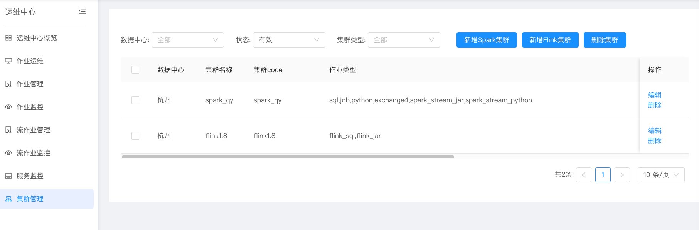
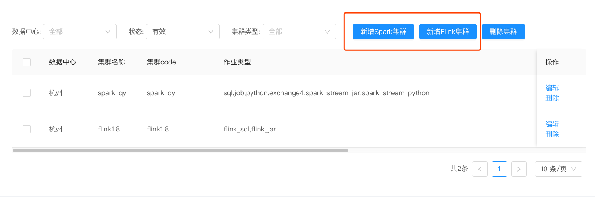
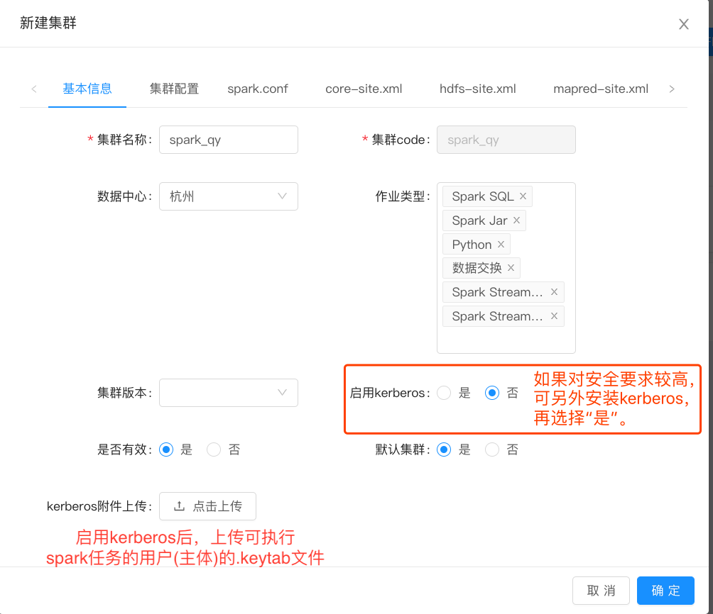
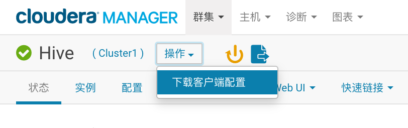
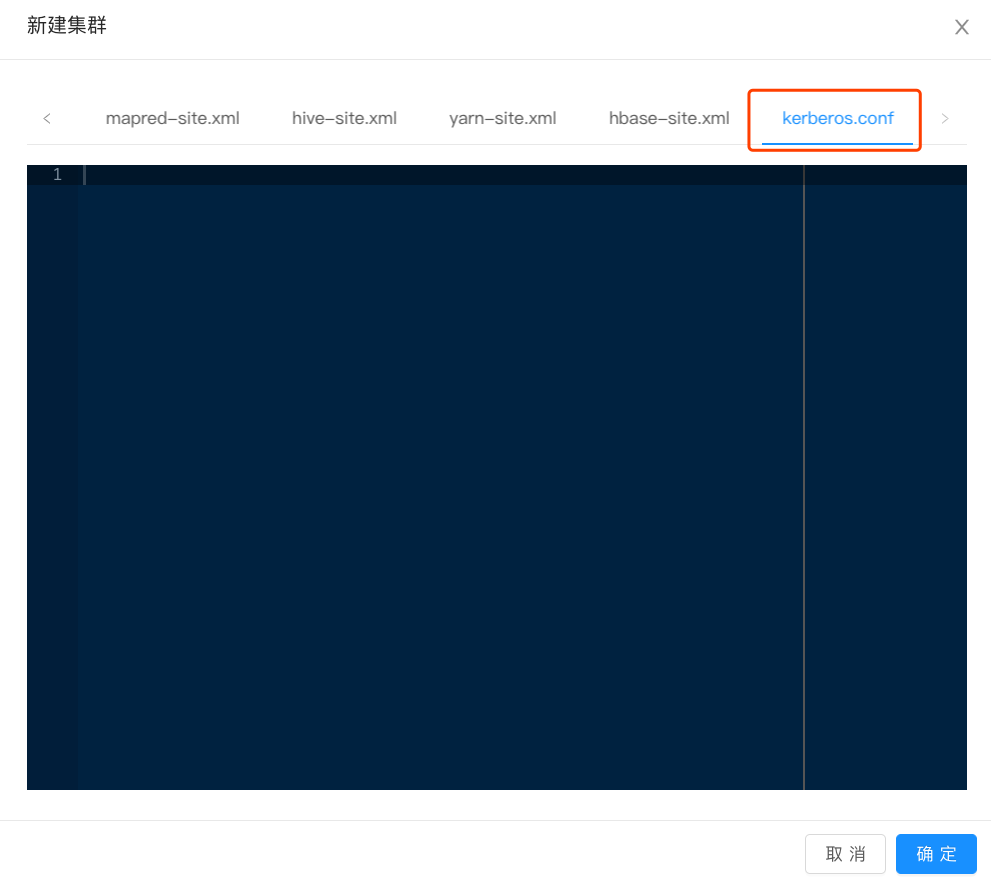

<!DOCTYPE HTML>
<html lang="zh-hans" >
    <head>
        <meta charset="UTF-8">
        <meta content="text/html; charset=utf-8" http-equiv="Content-Type">
        <title>3.4.8 集群管理 · GitBook</title>
        <meta http-equiv="X-UA-Compatible" content="IE=edge" />
        <meta name="description" content="">
        <meta name="generator" content="GitBook 3.2.3">
        
        
        
    
    <link rel="stylesheet" href="../../gitbook/style.css">

    
            
                
                <link rel="stylesheet" href="../../gitbook/gitbook-plugin-prism/prism-solarizedlight.css">
                
            
                
                <link rel="stylesheet" href="../../gitbook/gitbook-plugin-atoc/atoc.css">
                
            
                
                <link rel="stylesheet" href="../../gitbook/gitbook-plugin-search/search.css">
                
            
                
                <link rel="stylesheet" href="../../gitbook/gitbook-plugin-fontsettings/website.css">
                
            
        

    

    
        
    
        
    
        
    
        
    
        
    
        
    

        
    
    
    <meta name="HandheldFriendly" content="true"/>
    <meta name="viewport" content="width=device-width, initial-scale=1, user-scalable=no">
    <meta name="apple-mobile-web-app-capable" content="yes">
    <meta name="apple-mobile-web-app-status-bar-style" content="black">
    <link rel="apple-touch-icon-precomposed" sizes="152x152" href="../../gitbook/images/apple-touch-icon-precomposed-152.png">
    <link rel="shortcut icon" href="../../gitbook/images/favicon.ico" type="image/x-icon">

    
    <link rel="next" href="../../_" />
    
    
    <link rel="prev" href="3.4.7服务监控.html" />
    

    </head>
    <body>
        
<div class="book">
    <div class="book-summary">
        
            
<div id="book-search-input" role="search">
    <input type="text" placeholder="输入并搜索" />
</div>

            
                <nav role="navigation">
                


<ul class="summary">
    
    

    

    
        
        
    
        <li class="chapter " data-level="1.1" data-path="../../">
            
                <a href="../../">
            
                    
                    1 产品简介
            
                </a>
            

            
        </li>
    
        <li class="chapter " data-level="1.2" data-path="../../概念介绍.html">
            
                <a href="../../概念介绍.html">
            
                    
                    2 概念简介
            
                </a>
            

            
        </li>
    
        <li class="chapter " data-level="1.3" data-path="../../3.用户指南.md">
            
                <span>
            
                    
                    3 用户指南
            
                </a>
            

            
            <ul class="articles">
                
    
        <li class="chapter " data-level="1.3.1" data-path="../3.1.整体介绍.html">
            
                <a href="../3.1.整体介绍.html">
            
                    
                    3.1 整体介绍
            
                </a>
            

            
        </li>
    
        <li class="chapter " data-level="1.3.2" data-path="../../_">
            
                <span>
            
                    
                    3.2 数据开发
            
                </a>
            

            
            <ul class="articles">
                
    
        <li class="chapter " data-level="1.3.2.1" data-path="../3.2数据开发/3.2.1.作业开发.html">
            
                <a href="../3.2数据开发/3.2.1.作业开发.html">
            
                    
                    3.2.1 作业开发
            
                </a>
            

            
        </li>
    
        <li class="chapter " data-level="1.3.2.2" data-path="../3.2数据开发/3.2.2.资源管理.html">
            
                <a href="../3.2数据开发/3.2.2.资源管理.html">
            
                    
                    3.2.2 资源管理
            
                </a>
            

            
        </li>
    
        <li class="chapter " data-level="1.3.2.3" data-path="../3.2数据开发/3.2.3.函数管理.html">
            
                <a href="../3.2数据开发/3.2.3.函数管理.html">
            
                    
                    3.2.3 函数管理
            
                </a>
            

            
        </li>
    
        <li class="chapter " data-level="1.3.2.4" data-path="../3.2数据开发/3.2.4.表查询.html">
            
                <a href="../3.2数据开发/3.2.4.表查询.html">
            
                    
                    3.2.4 表查询
            
                </a>
            

            
        </li>
    
        <li class="chapter " data-level="1.3.2.5" data-path="../3.2数据开发/3.2.5.回收站.html">
            
                <a href="../3.2数据开发/3.2.5.回收站.html">
            
                    
                    3.2.5 回收站
            
                </a>
            

            
        </li>
    

            </ul>
            
        </li>
    
        <li class="chapter " data-level="1.3.3" data-path="../../_">
            
                <span>
            
                    
                    3.3 数据管理
            
                </a>
            

            
            <ul class="articles">
                
    
        <li class="chapter " data-level="1.3.3.1" data-path="../3.3 数据管理/3.3.1 数据管理概览.html">
            
                <a href="../3.3 数据管理/3.3.1 数据管理概览.html">
            
                    
                    3.3.1 数据管理概览
            
                </a>
            

            
        </li>
    
        <li class="chapter " data-level="1.3.3.2" data-path="../3.3 数据管理/3.3.2 数据查找.html">
            
                <a href="../3.3 数据管理/3.3.2 数据查找.html">
            
                    
                    3.3.2 数据查找
            
                </a>
            

            
        </li>
    
        <li class="chapter " data-level="1.3.3.3" data-path="../3.3 数据管理/3.3.3 我的表管理.html">
            
                <a href="../3.3 数据管理/3.3.3 我的表管理.html">
            
                    
                    3.3.3 我的表管理
            
                </a>
            

            
        </li>
    
        <li class="chapter " data-level="1.3.3.4" data-path="../3.3 数据管理/3.3.4 数据质量.html">
            
                <a href="../3.3 数据管理/3.3.4 数据质量.html">
            
                    
                    3.3.4 数据质量
            
                </a>
            

            
        </li>
    
        <li class="chapter " data-level="1.3.3.5" data-path="../3.3 数据管理/3.3.5 数据导出.html">
            
                <a href="../3.3 数据管理/3.3.5 数据导出.html">
            
                    
                    3.3.5 数据导出
            
                </a>
            

            
        </li>
    
        <li class="chapter " data-level="1.3.3.6" data-path="../3.3 数据管理/3.3.6 数据源管理.html">
            
                <a href="../3.3 数据管理/3.3.6 数据源管理.html">
            
                    
                    3.3.6 数据源管理
            
                </a>
            

            
        </li>
    
        <li class="chapter " data-level="1.3.3.7" data-path="../3.3 数据管理/3.3.7 数据权限申请.html">
            
                <a href="../3.3 数据管理/3.3.7 数据权限申请.html">
            
                    
                    3.3.7 数据权限申请
            
                </a>
            

            
        </li>
    
        <li class="chapter " data-level="1.3.3.8" data-path="../3.3 数据管理/3.3.8 数据权限审核.html">
            
                <a href="../3.3 数据管理/3.3.8 数据权限审核.html">
            
                    
                    3.3.8 数据权限审核
            
                </a>
            

            
        </li>
    

            </ul>
            
        </li>
    
        <li class="chapter " data-level="1.3.4" data-path="../../_">
            
                <span>
            
                    
                    3.4 运维中心
            
                </a>
            

            
            <ul class="articles">
                
    
        <li class="chapter " data-level="1.3.4.1" data-path="3.4.1运维中心概览.html">
            
                <a href="3.4.1运维中心概览.html">
            
                    
                    3.4.1 运维中心概览
            
                </a>
            

            
        </li>
    
        <li class="chapter " data-level="1.3.4.2" data-path="3.4.2作业运维.html">
            
                <a href="3.4.2作业运维.html">
            
                    
                    3.4.2 作业运维
            
                </a>
            

            
        </li>
    
        <li class="chapter " data-level="1.3.4.3" data-path="3.4.3作业管理.html">
            
                <a href="3.4.3作业管理.html">
            
                    
                    3.4.3 作业管理
            
                </a>
            

            
        </li>
    
        <li class="chapter " data-level="1.3.4.4" data-path="3.4.4作业监控.html">
            
                <a href="3.4.4作业监控.html">
            
                    
                    3.4.4 作业监控
            
                </a>
            

            
        </li>
    
        <li class="chapter " data-level="1.3.4.5" data-path="3.4.5流作业管理.html">
            
                <a href="3.4.5流作业管理.html">
            
                    
                    3.4.5 流作业管理
            
                </a>
            

            
        </li>
    
        <li class="chapter " data-level="1.3.4.6" data-path="3.4.6流作业监控.html">
            
                <a href="3.4.6流作业监控.html">
            
                    
                    3.4.6 流作业监控
            
                </a>
            

            
        </li>
    
        <li class="chapter " data-level="1.3.4.7" data-path="3.4.7服务监控.html">
            
                <a href="3.4.7服务监控.html">
            
                    
                    3.4.7 服务监控
            
                </a>
            

            
        </li>
    
        <li class="chapter active" data-level="1.3.4.8" data-path="3.4.8集群管理.html">
            
                <a href="3.4.8集群管理.html">
            
                    
                    3.4.8 集群管理
            
                </a>
            

            
        </li>
    

            </ul>
            
        </li>
    
        <li class="chapter " data-level="1.3.5" data-path="../../_">
            
                <span>
            
                    
                    3.5 系统管理
            
                </a>
            

            
            <ul class="articles">
                
    
        <li class="chapter " data-level="1.3.5.1" data-path="../3.5 系统管理/3.5.1 项目管理.html">
            
                <a href="../3.5 系统管理/3.5.1 项目管理.html">
            
                    
                    3.5.1 项目管理
            
                </a>
            

            
        </li>
    
        <li class="chapter " data-level="1.3.5.2" data-path="../3.5 系统管理/3.5.2 租户管理.html">
            
                <a href="../3.5 系统管理/3.5.2 租户管理.html">
            
                    
                    3.5.2 租户管理
            
                </a>
            

            
        </li>
    
        <li class="chapter " data-level="1.3.5.3" data-path="../3.5 系统管理/3.5.3 资源池管理.html">
            
                <a href="../3.5 系统管理/3.5.3 资源池管理.html">
            
                    
                    3.5.3 资源池管理
            
                </a>
            

            
        </li>
    
        <li class="chapter " data-level="1.3.5.4" data-path="../3.5 系统管理/3.5.4 全局配置.html">
            
                <a href="../3.5 系统管理/3.5.4 全局配置.html">
            
                    
                    3.5.4 全局配置
            
                </a>
            

            
        </li>
    

            </ul>
            
        </li>
    
        <li class="chapter " data-level="1.3.6" data-path="../3.6 权限管理/3.6 权限管理.html">
            
                <a href="../3.6 权限管理/3.6 权限管理.html">
            
                    
                    3.6 权限管理
            
                </a>
            

            
            <ul class="articles">
                
    
        <li class="chapter " data-level="1.3.6.1" data-path="../3.6 权限管理/3.6.1 角色.html">
            
                <a href="../3.6 权限管理/3.6.1 角色.html">
            
                    
                    3.6.1 角色
            
                </a>
            

            
        </li>
    
        <li class="chapter " data-level="1.3.6.2" data-path="../3.6 权限管理/3.6.2 用户管理.html">
            
                <a href="../3.6 权限管理/3.6.2 用户管理.html">
            
                    
                    3.6.2 用户管理
            
                </a>
            

            
        </li>
    
        <li class="chapter " data-level="1.3.6.3" data-path="../3.6 权限管理/3.6.3 个人信息.html">
            
                <a href="../3.6 权限管理/3.6.3 个人信息.html">
            
                    
                    3.6.3 个人信息
            
                </a>
            

            
        </li>
    

            </ul>
            
        </li>
    

            </ul>
            
        </li>
    
        <li class="chapter " data-level="1.4" data-path="../../4 SQL语法/sql.html">
            
                <a href="../../4 SQL语法/sql.html">
            
                    
                    4 SQL 语法
            
                </a>
            

            
        </li>
    
        <li class="chapter " data-level="1.5" data-path="../../_">
            
                <span>
            
                    
                    5 函数
            
                </a>
            

            
            <ul class="articles">
                
    
        <li class="chapter " data-level="1.5.1" data-path="../../5 公共函数/5.1 公共函数案例/function.html">
            
                <a href="../../5 公共函数/5.1 公共函数案例/function.html">
            
                    
                    5.1 公共函数案例
            
                </a>
            

            
        </li>
    
        <li class="chapter " data-level="1.5.2" data-path="../../5 公共函数/5.2 自定义udf.html">
            
                <a href="../../5 公共函数/5.2 自定义udf.html">
            
                    
                    5.2 自定义UDF案例
            
                </a>
            

            
        </li>
    

            </ul>
            
        </li>
    
        <li class="chapter " data-level="1.6" data-path="../../_">
            
                <span>
            
                    
                    6 实时计算
            
                </a>
            

            
            <ul class="articles">
                
    
        <li class="chapter " data-level="1.6.1" data-path="../../6 实时计算/6.1 SparkStream作业.html">
            
                <a href="../../6 实时计算/6.1 SparkStream作业.html">
            
                    
                    6.1 SparkStream作业
            
                </a>
            

            
        </li>
    
        <li class="chapter " data-level="1.6.2" data-path="../../6 实时计算/6.2 Flink Sql.html">
            
                <a href="../../6 实时计算/6.2 Flink Sql.html">
            
                    
                    6.2 Flink SQL
            
                </a>
            

            
        </li>
    

            </ul>
            
        </li>
    
        <li class="chapter " data-level="1.7" data-path="../../_">
            
                <span>
            
                    
                    7 最佳实践
            
                </a>
            

            
            <ul class="articles">
                
    
        <li class="chapter " data-level="1.7.1" data-path="../../7最佳实践/7.1 Python作业开发.html">
            
                <a href="../../7最佳实践/7.1 Python作业开发.html">
            
                    
                    7.1 Python作业案例
            
                </a>
            

            
        </li>
    
        <li class="chapter " data-level="1.7.2" data-path="../../7最佳实践/7.2 Jar作业开发.html">
            
                <a href="../../7最佳实践/7.2 Jar作业开发.html">
            
                    
                    7.2 Jar作业开发
            
                </a>
            

            
        </li>
    

            </ul>
            
        </li>
    

    

    <li class="divider"></li>

    <li>
        <a href="https://www.gitbook.com" target="blank" class="gitbook-link">
            本书使用 GitBook 发布
        </a>
    </li>
</ul>


                </nav>
            
        
    </div>

    <div class="book-body">
        
            <div class="body-inner">
                
                    

<div class="book-header" role="navigation">
    

    <!-- Title -->
    <h1>
        <i class="fa fa-circle-o-notch fa-spin"></i>
        <a href="../.." >3.4.8 集群管理</a>
    </h1>
</div>


                    <div class="page-wrapper" tabindex="-1" role="main">
                        <div class="page-inner">
                            
<div id="book-search-results">
    <div class="search-noresults">
    
                                <section class="normal markdown-section">
                                
                                <h3 id="348-&#x96C6;&#x7FA4;&#x7BA1;&#x7406;">3.4.8 &#x96C6;&#x7FA4;&#x7BA1;&#x7406;</h3>
<p>&#x96C6;&#x7FA4;&#x7BA1;&#x7406;&#x6A21;&#x5757;&#x53EF;&#x4EE5;&#x5BF9;&#x5E73;&#x53F0;&#x7684;&#x6240;&#x6709;&#x96C6;&#x7FA4;&#x7684;&#x914D;&#x7F6E;&#x4FE1;&#x606F;&#x7EDF;&#x4E00;&#x7BA1;&#x7406;,&#x8FD9;&#x4E2A;&#x6A21;&#x5757;&#x53EA;&#x6709;&#x5E73;&#x53F0;&#x7BA1;&#x7406;&#x5458;&#x7684;&#x6743;&#x9650;&#x89D2;&#x8272;&#x624D;&#x53EF;&#x4EE5;&#x8FDB;&#x5165;&#x3002;
</p>
<h4 id="3481&#x65B0;&#x589E;&#x96C6;&#x7FA4;">3.4.8.1&#x65B0;&#x589E;&#x96C6;&#x7FA4;</h4>
<p>&#x5982;&#x4E0B;&#x56FE;&#x9009;&#x62E9;&#x4E00;&#x79CD;&#x96C6;&#x7FA4;&#x7C7B;&#x578B;&#x3002;spark&#x96C6;&#x7FA4;&#x7528;&#x4E8E;&#x5904;&#x7406;Spark&#x4EFB;&#x52A1;&#xFF0C;&#x5305;&#x62EC;&#x5B9A;&#x65F6;&#x548C;&#x5468;&#x671F;&#x7684;&#x79BB;&#x7EBF;&#x4EFB;&#x52A1;&#x548C;Spark Stream&#x4EFB;&#x52A1;&#xFF0C;flink&#x96C6;&#x7FA4;&#x7528;&#x4E8E;&#x5904;&#x7406;&#x5B9E;&#x65F6;Flink&#x4EFB;&#x52A1;&#xFF0C;spark&#x96C6;&#x7FA4;&#x6BD4;flink&#x96C6;&#x7FA4;&#x591A;&#x51FA;&#x4E00;&#x4E2A;spark.conf&#x914D;&#x7F6E;&#x3002;
</p>
<h4 id="3482-&#x914D;&#x7F6E;&#x96C6;&#x7FA4;">3.4.8.2 &#x914D;&#x7F6E;&#x96C6;&#x7FA4;</h4>
<ul>
<li>&#x57FA;&#x672C;&#x4FE1;&#x606F;
</li>
</ul>
<h4 id="3483-&#x96C6;&#x7FA4;&#x7684;&#x5177;&#x4F53;&#x914D;&#x7F6E;">3.4.8.3 &#x96C6;&#x7FA4;&#x7684;&#x5177;&#x4F53;&#x914D;&#x7F6E;</h4>
<p>&#x6837;&#x4F8B;&#x5982;&#x4E0B;&#xFF1A;</p>
<pre class="language-"><code>#jobserver-tomcat &#x7684; conf/server.xml&#x91CC;&#x7684;&#x63D0;&#x4F9B;&#x670D;&#x52A1;&#x7684;&#x7AEF;&#x53E3;
server.port = 7002
spark.home = /home/admin/spark-2.4.0-bin-2.6.0-cdh5.15.0
spark.yarn.jars = /user/yarn_jars/spark_2.4.0_2.0.0/*
spark.jobserver.jar = /user/yarn_jars/spark_2.4.0_2.0.0/jobserver-yarn-2.4.0.jar

#datacompute&#x5730;&#x5740;
datacompute.addr =http://10.57.26.5:8181

#jobserver-control &#x548C; jobserver-yarn &#x7528;&#x5230;kerberos&#x7528;&#x6237;&#x540D;
#hadoop.kerberos.user=tdkj1@HADOOP.COM

hadoop.yarn.webui = http://cdh173:8088
spark.create.table.enabled = true
jobserver.profile = dev
jobserver.console.url = http://cdh173:8088/proxy/
spark.jobserver.control.url = http://10.57.30.218:7002

datacompute.git = https://gitlab.fraudmetrix.cn
jobserver.parquet.write.users = jian.tang

spark.dc.column.authorization.enabled = true

spark.executor.extraJavaOptions = -Dfile.encoding=UTF-8
spark.driver.extraJavaOptions = -Dfile.encoding=UTF-8


//&#x96C6;&#x7FA4;&#x63D0;&#x4EA4;&#x9650;&#x5236;
spark.jobserver.maxAccept = 8
spark.jobserver.maxNum =20
spark.jobserver.yarn.limitMemory = 1024
spark.jobserver.yarn.limitCore = 2
</code></pre><h4 id="3484--sparkconf&#x7684;&#x914D;&#x7F6E;">3.4.8.4  spark.conf&#x7684;&#x914D;&#x7F6E;</h4>
<p>&#x6837;&#x4F8B;&#x5982;&#x4E0B;&#xFF1A;</p>
<pre class="language-"><code>spark.yarn.queue default
spark.master yarn
#spark.dc.url  http://cdh174:8181
spark.yarn.dist.jars hdfs://tdhdfs/user/yarn_jars/aspectjweaver-1.8.10.jar,hdfs://tdhdfs/user/yarn_jars/jvm_profiler/jvm-profiler-0.0.9.jar,hdfs://tdhdfs/user/yarn_jars/sql_extensions/spark-sql-extension-1.0.1.jar

#spark&#x8C03;&#x5EA6;&#x53C2;&#x6570;
spark.speculation  false
spark.speculation.interval  1000
spark.speculation.multiplier  1.5
spark.speculation.quantile  0.75
spark.task.cpus  1

#spark&#x6267;&#x884C;&#x53C2;&#x6570;
spark.broadcast.blockSize  4m
spark.default.parallelism  8
spark.files.useFetchCache  true
spark.files.maxPartitionBytes  134217728
spark.storage.memoryMapThreshold  10m
spark.files.overwrite  true
spark.eventLog.logStageExecutorMetrics.enabled true
spark.eventLog.logStageExecutorProcessTreeMetrics.enabled true


#spark&#x542F;&#x52A8;&#x53C2;&#x6570;
spark.executor.instances  1
spark.executor.memory  1G
spark.driver.memory  1G
spark.driver.cores  1
spark.executor.memoryOverhead  512m
spark.driver.memoryOverhead  521m
spark.yarn.queue  root.user.admin
spark.hive.init  true
spark.tispark.pd.addresses  10.58.10.33:2379
spark.tispark.plan.allow_index_read  true
#sql&#x589E;&#x5F3A; &#x6743;&#x9650;&#x4E4B;&#x7C7B;
#spark.sql.extensions  cn.tongdun.sql.TDExtensions

#sparksql&#x53C2;&#x6570;
spark.sql.codegen  false
spark.sql.shuffle.partitions  200
spark.sql.parquet.cacheMetadata  true
spark.sql.inMemoryColumnarStorage.compressed  true
spark.sql.inMemoryColumnarStorage.batchSize  10000
spark.sql.catalogImplementation  hive
#spark.sql.parquet.compression.codec zstd

#spark&#x52A8;&#x6001;&#x5206;&#x914D;&#x53C2;&#x6570;
spark.dynamicAllocation.enabled  false
spark.shuffle.service.enabled  true
spark.dynamicAllocation.executorIdleTimeout=300s
spark.dynamicAllocation.minExecutors 6
spark.dynamicAllocation.initialExecutors  0
spark.dynamicAllocation.maxExecutors  30

spark.hadoop.hive.exec.compress.output  true
spark.hadoop.mapreduce.output.fileoutputformat.compress.codec  org.apache.hadoop.io.compress.SnappyCodec
spark.hadoop.hive.output.file.extension  .snappy.parquet
spark.hadoop.parquet.metadata.read.parallelism  8
spark.hadoop.parquet.compress  SNAPPY


spark.parquet.column.index.access true
spark.sql.parquet.mergeSchema  false
spark.submit.tasks.threshold.enabled  true
spark.submit.tasks.threshold  10000
spark.driver.extraLibraryPath   /opt/cloudera/parcels/CDH/lib/hadoop/lib/native
spark.executor.extraLibraryPath /opt/cloudera/parcels/CDH/lib/hadoop/lib/native
spark.eventLog.enabled          true
spark.eventLog.dir              hdfs://tdhdfs/tmp/spark
spark.serializer org.apache.spark.serializer.KryoSerializer
spark.updatejar.enabled         true
</code></pre><h4 id="3484-&#x5404;&#x79CD;-xxx-sitexml&#x914D;&#x7F6E;&#x6587;&#x4EF6;">3.4.8.4 &#x5404;&#x79CD; xxx-site.xml&#x914D;&#x7F6E;&#x6587;&#x4EF6;</h4>
<p>&#x4ECE;cdh&#x7684;hive&#x7BA1;&#x7406;&#x754C;&#x9762;&#x4E0B;&#x8F7D;&#xFF0C;&#x7136;&#x540E;&#x9010;&#x4E00;&#x590D;&#x5236;&#x4E0A;&#x53BB;&#xFF1A;
</p>
<h4 id="3485-kerberosconf&#x914D;&#x7F6E;">3.4.8.5 kerberos.conf&#x914D;&#x7F6E;</h4>
<p>&#x82E5;&#x542F;&#x7528;&#x4E86;kerberos&#xFF0C;&#x5219;&#x5C06;krb5.conf&#x91CC;&#x7684;&#x5185;&#x5BB9;&#x590D;&#x5236;&#x5230;&#x8FD9;&#x91CC;&#xFF1A;
</p>
<script type="text/javascript">var className='atoc';</script>
                                
                                </section>
                            
    </div>
    <div class="search-results">
        <div class="has-results">
            
            <h1 class="search-results-title"><span class='search-results-count'></span> results matching "<span class='search-query'></span>"</h1>
            <ul class="search-results-list"></ul>
            
        </div>
        <div class="no-results">
            
            <h1 class="search-results-title">No results matching "<span class='search-query'></span>"</h1>
            
        </div>
    </div>
</div>

                        </div>
                    </div>
                
            </div>

            
                
                <a href="3.4.7服务监控.html" class="navigation navigation-prev " aria-label="Previous page: 3.4.7 服务监控">
                    <i class="fa fa-angle-left"></i>
                </a>
                
                
                <a href="../../_" class="navigation navigation-next " aria-label="Next page: 3.5 系统管理">
                    <i class="fa fa-angle-right"></i>
                </a>
                
            
        
    </div>

    <script>
        var gitbook = gitbook || [];
        gitbook.push(function() {
            gitbook.page.hasChanged({"page":{"title":"3.4.8 集群管理","level":"1.3.4.8","depth":3,"next":{"title":"3.5 系统管理","level":"1.3.5","depth":2,"path":"_","ref":"_","articles":[{"title":"3.5.1 项目管理","level":"1.3.5.1","depth":3,"path":"3.用户指南/3.5 系统管理/3.5.1 项目管理.md","ref":"3.用户指南/3.5 系统管理/3.5.1 项目管理.md","articles":[]},{"title":"3.5.2 租户管理","level":"1.3.5.2","depth":3,"path":"3.用户指南/3.5 系统管理/3.5.2 租户管理.md","ref":"3.用户指南/3.5 系统管理/3.5.2 租户管理.md","articles":[]},{"title":"3.5.3 资源池管理","level":"1.3.5.3","depth":3,"path":"3.用户指南/3.5 系统管理/3.5.3 资源池管理.md","ref":"3.用户指南/3.5 系统管理/3.5.3 资源池管理.md","articles":[]},{"title":"3.5.4 全局配置","level":"1.3.5.4","depth":3,"path":"3.用户指南/3.5 系统管理/3.5.4 全局配置.md","ref":"3.用户指南/3.5 系统管理/3.5.4 全局配置.md","articles":[]}]},"previous":{"title":"3.4.7 服务监控","level":"1.3.4.7","depth":3,"path":"3.用户指南/3.4运维中心/3.4.7服务监控.md","ref":"3.用户指南/3.4运维中心/3.4.7服务监控.md","articles":[]},"dir":"ltr"},"config":{"plugins":["-highlight","-sharing","prism","prism-themes","atoc","livereload"],"styles":{"website":"styles/website.css","pdf":"styles/pdf.css","epub":"styles/epub.css","mobi":"styles/mobi.css","ebook":"styles/ebook.css","print":"styles/print.css"},"pluginsConfig":{"prism":{"css":["prismjs/themes/prism-solarizedlight.css"]},"atoc":{"addClass":true,"className":"atoc"},"prism-themes":{},"livereload":{},"search":{},"lunr":{"maxIndexSize":1000000,"ignoreSpecialCharacters":false},"fontsettings":{"theme":"white","family":"sans","size":2},"theme-default":{"styles":{"website":"styles/website.css","pdf":"styles/pdf.css","epub":"styles/epub.css","mobi":"styles/mobi.css","ebook":"styles/ebook.css","print":"styles/print.css"},"showLevel":false}},"theme":"default","pdf":{"pageNumbers":true,"fontSize":12,"fontFamily":"Arial","paperSize":"a4","chapterMark":"pagebreak","pageBreaksBefore":"/","margin":{"right":62,"left":62,"top":56,"bottom":56}},"structure":{"langs":"LANGS.md","readme":"README.md","glossary":"GLOSSARY.md","summary":"SUMMARY.md"},"variables":{},"language":"zh-hans","gitbook":"*"},"file":{"path":"3.用户指南/3.4运维中心/3.4.8集群管理.md","mtime":"2019-07-23T05:54:10.044Z","type":"markdown"},"gitbook":{"version":"3.2.3","time":"2019-07-24T02:56:16.570Z"},"basePath":"../..","book":{"language":""}});
        });
    </script>
</div>

        
    <script src="../../gitbook/gitbook.js"></script>
    <script src="../../gitbook/theme.js"></script>
    
        
        <script src="../../gitbook/gitbook-plugin-atoc/atoc.js"></script>
        
    
        
        <script src="../../gitbook/gitbook-plugin-livereload/plugin.js"></script>
        
    
        
        <script src="../../gitbook/gitbook-plugin-search/search-engine.js"></script>
        
    
        
        <script src="../../gitbook/gitbook-plugin-search/search.js"></script>
        
    
        
        <script src="../../gitbook/gitbook-plugin-lunr/lunr.min.js"></script>
        
    
        
        <script src="../../gitbook/gitbook-plugin-lunr/search-lunr.js"></script>
        
    
        
        <script src="../../gitbook/gitbook-plugin-fontsettings/fontsettings.js"></script>
        
    

    </body>
</html>

